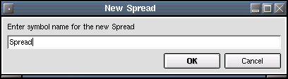

Spread
Description:
Create and update spread charts. A spread chart is the value of the
first symbol minus the value of the second symbol. Usually used by
futures traders, but can be used with any stock or futures chart.

The first dialog prompts the user to name the spread.
Input Parameters:
- First Symbol - The 'buy' half of the spread.
- Second Symbol - The 'sell' half of the spread.